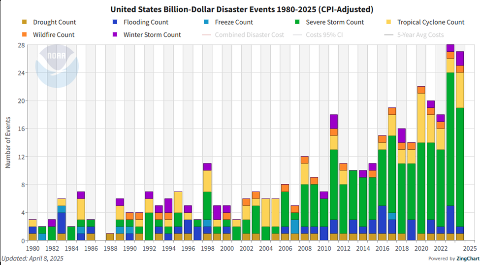
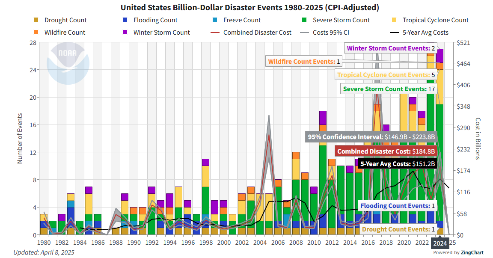
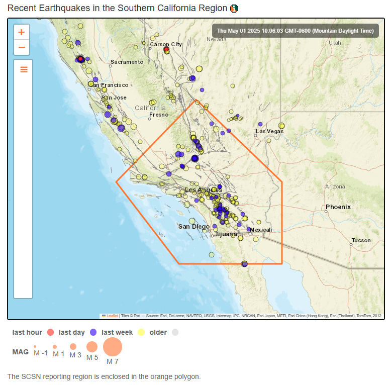
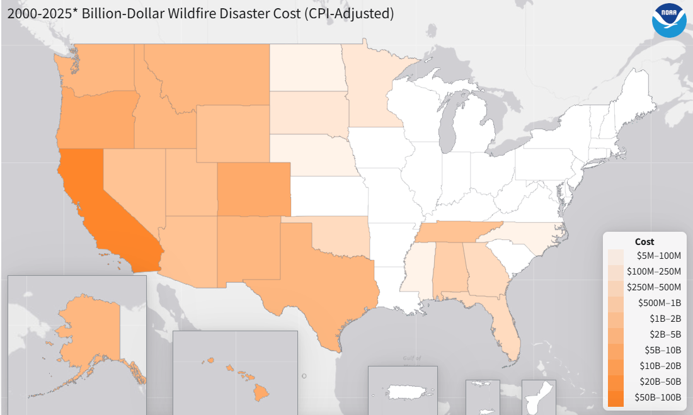
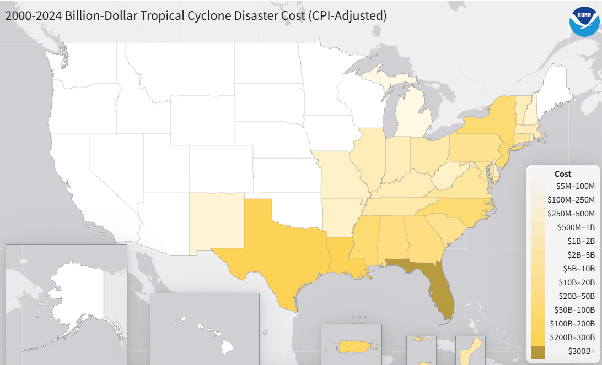
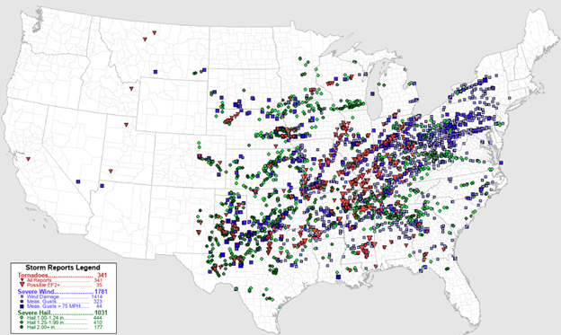
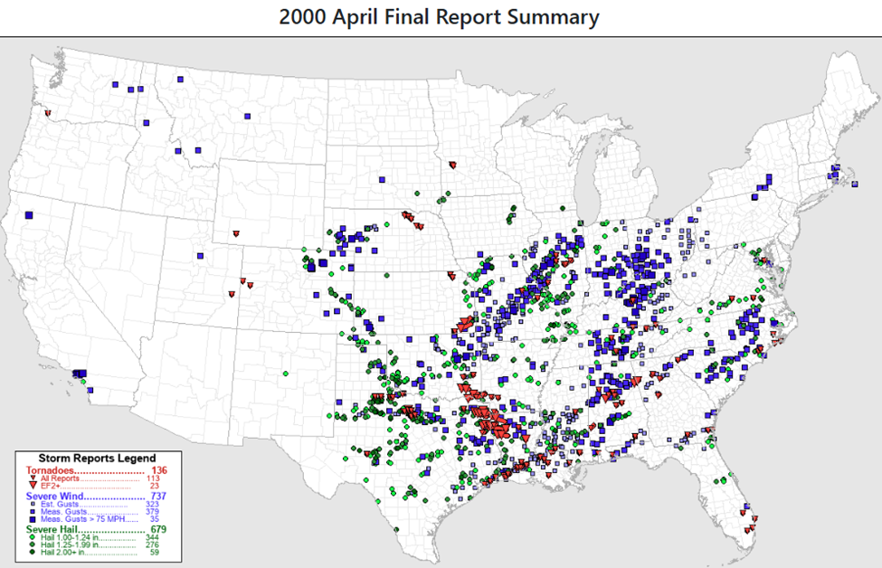

There are many other types of graphs that you can use to summarize data, depending on what the data is intended to display. We are not limited to graphing with just one or two variables. We are going to explore a few online resources that have interactive graphs.
Objectives
At the end of this section you will be able to:
Recognize data can be visualized in a variety of ways
Interpret a variety of graphs
There are many other types of graphs that you can use to display data. Pictographs use pictures to represent objects. You may see time series plots to show how quantities change over time. Sometimes quantities are displayed in a density map where the higher concentrations are darker in color. These are but a few examples involving climate data that we will explore.
The National Centers for Environmental Information (NCEI) tracks severe weather and climate events from a historical perspective and their economic and societal impacts.
The U.S. has sustained 403 weather and climate disasters since 1980 where overall damages/costs reached or exceeded $1 billion (including CPI adjustment to 2025). The total cost of these 403 events exceeds $2.945 trillion.
Back in the 1980s the average was 9 severe events per year, yet in the most recent 5 years the average is 23 events per year. The increase in the number of climate disasters is costly.
The pictograph below denotes the location of 27 separate billion-dollar weather and climate disasters that impacted the United States in 2024.
Graph interpretation: The graph depicts the location of the severe weather disaster as well as their type with a pictograph. The graph also indicates the dates of these disasters in 2024. The tropical cyclones and hurricanes occur along the coasts while the tornadoes occur in the central states. There was only one case of flooding that exceeded the $1 billion mark.
The graph below is a segmented bar graph where each color represents a different type of severe weather event. On the left-side axis, it depicts the number of events for the year listed on the x-axis. We can see that the total number of events is increasing over time. This is an example of a time series plot.

Figure2.4.2.Number of Weather Disasters since 1980
Graph interpretation: We can see in more recent years on the right side of the graph that severe storms (green bars) and tropical cyclones (yellow bars) are occurring more frequently.
If you go to the website, you can click on a specific year to find the totals for each category as well as the 5-year average cost and the 95% confidence interval of the cost. The right-side axis gives the total cost in billions for those events. We can see that the total number of events is increasing over time, as well as the total cost for these events. The graph below summarizes the data for 2024.

Figure2.4.3.Costs of Weather Disasters since 1980
Graph interpretation: In 2024, there were 27 confirmed U.S. billion-dollar weather and climate disaster events. These events include: 17 severe storm events (tornado outbreaks, high wind, hailstorms), 5 tropical cyclones, one wildfire, one drought/heat wave, one flooding, and two winter storm events. The total cost of these 27 events was $184.8 billion. The red line for the Combined Disaster Cost is another example of a time-series plot. We can see that in 2005 and 2017 the total cost jumped dramatically.
Exercises
The segmented graph below summarizes the total number of billion-dollar disasters throughout the year since 1980 according to the month they occurred.
Using the United States Billion Dollar Disaster Type Counts by Month graph above, answer the following questions.
The Southern California Earthquake Data Center (SCEDC) is the archive of the Caltech/USGS Southern California Seismic network (SCSN). They track the location and size of seismic activities in California. This graph illustrates the location of recent earthquakes in southern California. The dots are color coded for when the earthquake occurred, red for within the last hour, blue for within the last week, and yellow for within the last 30 days. The size of the dots indicates the magnitude (or strength) of the earthquake. If you go to the website, you can click on a specific dot to identify the date, time, and magnitude of the earthquake.

Figure2.4.5.Earthquakes in southern California around May 1, 2025
Graph interpretation We can see there is a red dot near Carson City, Nevada which had a magnitude of 0.9 on May 1. The yellow dot near San Diego, California had a magnitude of 2.45 on April 29, 2025.
The National Centers for Environmental Information has an interactive mapping tool to help visualize the location and cost for billion-dollar climate events. This mapping of the United States shows which states had the most extensive cost for wildfires from 2000 through April of 2025.

Figure2.4.6.Wildfire costs by state
The density map above summarizes the 19 wildfire events with losses exceeding $1-billion dollars each. The darker the color the more loss for that state. California has between $50-$100 billion in loss while Colorado and Oregon have $5-$10 billion in wildfire loss. The states in white had no billion-dollar level wildfires. The total is between $100-$200 billion for this time period of 2000-2025.
This density map of the United States (below) shows which states had the most extensive cost for tropical cyclones and hurricanes for 2000-2024. There were 48 tropical cyclone events with losses exceeding $1 billion each. Florida has experienced over $360 billion in loss. Texas and Louisiana had $200-300 billion in damage. The total for the 25 years displayed is $1.3 trillion dollars.

Figure2.4.7.Tropical cyclone costs by state
Using the link below, explore other weather disasters and the accumulated costs or frequency per state. You can adjust to the years of interest since 1980.
The Storm Prediction Center (SPC) is part of the National Weather Service (NWS) and provide timely forecasts and watches for severe thunderstorms and tornadoes over the contiguous United States.
Below is a severe weather map for the Month of April in 2025. Each red triangle depicts the location of a tornado, blue squares represent severe wind, and green circles represent severe hail. The larger the symbol, the stronger the tornado, wind speed, or hail stone size.

Figure2.4.8.Severe Weather events in April 2025
Interpretation: From the legend, we can see there were 341 tornadoes in the US with 35 rating of EF2 or greater in the month of April 2025. There were 1781 severe wind storms with 44 of them exceeding 75 mile per hour gusts. There were 1031 severe hailstorms with 444 storms with hail stones of at least 1 inch and 177storms with hailstones more than 2 inches in diameter.
We can compare this to the severe weather map from April in 2000. Does there appear to be more severe with storms across the United States now or then?

Figure2.4.9.Severe Weather events in April 2000
In April 2000, there were 136 tornadoes, 737 severe windstorms, and 679 storms with severe hail. It does appear there were more severe weather storms in 2025 than in 2000.
Graph Exploration
Now it is your turn to explore some of the variables from the different websites. Clearly identify which years and variables you are analyzing.